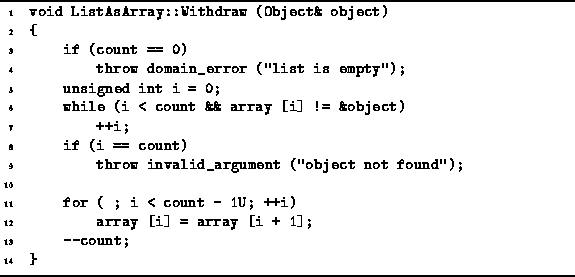
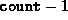
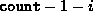
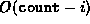

Data Structures and Algorithms
with Object-Oriented Design Patterns in C++
Data Structures and Algorithms
with Object-Oriented Design Patterns in C++
Objects are removed from a searchable container
using the Withdraw function.
Program  defines the Withdraw function
for the ListAsArray class.
This function takes a single argument which is a
reference to the object to be removed from the container.
It is the specific object instance which is removed from the container,
not simply one which matches (i.e., compares equal to) the argument.
defines the Withdraw function
for the ListAsArray class.
This function takes a single argument which is a
reference to the object to be removed from the container.
It is the specific object instance which is removed from the container,
not simply one which matches (i.e., compares equal to) the argument.

Program: ListAsArray Class Withdraw Member Function Definition
The withdraw function first needs to find the position of the item to be removed from the list. This part is identical to the main loop of the IsMember function. An exception is thrown if the list is empty, or if the object to be removed is not in the list. The number of iterations needed to find an object depends on its position. If the object to be removed is found at position i, then the search phase takes O(i) time.
Removing an object from position i of an ordered list which is stored in an array requires that all of the objects at positions i+1, i+2, ..., , be moved one position to the left. Altogether,  objects need to be moved. Hence, this phase takes  time.
The running time of the Withdraw function is
the sum of the running times of the two phases, O(i)+ .
Hence, the total running time is O(n),
where  is the number of items in the ordered list.
is the number of items in the ordered list.
Care must be taken when using the Withdraw function. Consider the following:
Object& object1 = *new Int (57); Object& object2 = *new Int (57); ListAsArray list (1); list.Insert (object1);To remove object1 from the ordered list, we may write
list.Withdraw (object1);However, the call
list.Withdraw (object2);will fail because object2 is not actually in the list. If for some reason we have lost track of object1, we can always write:
list.Withdraw (list.Find (object2));which first locates the object in the ordered list (object1) which matches object2 and then deletes that object.
 Copyright © 1997 by Bruno R. Preiss, P.Eng. All rights reserved.
Copyright © 1997 by Bruno R. Preiss, P.Eng. All rights reserved.